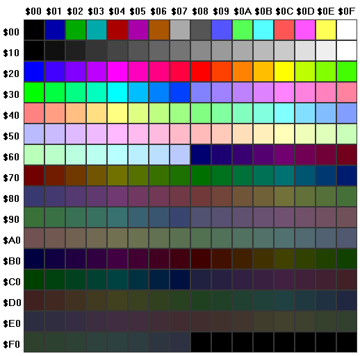

This gets a little hairy.
See: RGB Color Model.
As you know, a palette is nothing more than an ordered list of color definitions. A color may be defined in many different ways. We use what's known as the RGB Color Model.
Internally a palette is stored as an array of one or more RGB triplets.
Each value in the triplet is called a component (or a channel). In other words, there's a red component, a green component, and a blue component. Together they form a triplet.
In other words, any color is represented by a combination of different
amounts of these three primary
colors. No these aren't the primary
colors you learned about while mixing paints in art class. But the concept
is the same.
Each component is stored as an integer. These numbers range from 0 to 255 which is also 20 to 28-1. All the possible values that can be represented in a byte (or 8 bits) of data.
By choosing these triplet values, you can define any of
256*256*256 = 224 = 16,777,216
colors. Wow! That's nearly 17 million colors.
This range is known formally as true color because it represents the full gamut of colors distinguishable by the human eye. To put it a different way, there are theoretically an infinite number of possible colors. But the human eye can't tell the difference between colors that are too similar. A range of 224 is about all our eyes can handle.
Let's play with an example. Shown below is a very basic color picker tool. Play around with the controls to make various colors. Observe which mixtures of numbers produce various colors.
The above tool allows you to create a color definition.
In the RGB color model, this is just three integers. Each integer
is from the number series [0, 1 ... 255]. So there
are exactly 256 (28) possible
values to chose from.
The number at the bottom-left in the color picker is a hexadecimal representation of the color.
Programmers use hexadecimal a lot. We call it hex for short.
This is the format used by HTML -- the language of most web sites.
Its format is #RR GG BB, where:
# is a prefix indicating base-16 (hex) RR is the red component (2 hex digits) GG is the green component (2 hex digits) BB is the blue component (2 hex digits)
For example, I know from experience that the color cerulean is:
| Component | Decimal Value | Hex Value |
|---|---|---|
| Red | 5 | #05 |
| Green | 184 | #B8 |
| Blue | 204 | #CC |
I could write it in set notation as (5, 184, 204) or in HTML notation as #05B8CC. Try it in the color picker and see for yourself.
There are lots of ways RGB color definitions may be expressed. Here are a few:
| Example | Description |
|---|---|
| 5 184 204 | Space separated integers |
| 5,184,204 | Comma separated integers |
| (5,184,204) | Set notation |
| {5,184,204} | Set notation |
| [5,184,204] | Set notation |
| #05B8CC | Hexadecimal integer (HTML) |
| 0x05B8CC | Hexadecimal integer (C) |
| &H05B8CC | Hexadecimal integer (BASIC) |
| 05B8CCh | Hexadecimal integer (MASM) |
| 374988 | Decimal integer |
Some of the notations are of the N-Tuple variety. These are all some form of set notation. Also sometimes called:
Essentially these all have three separate values to consider.
The other notations are various ways to express the color as a single integer value. In general, the single number variety uses this formula to combine individual R, G and B components into a single integer value:
total = red * 65536
+ green * 256
+ blue
-- For Example --
374988 = 5 * 65536
+ 184 * 256
+ 204
This single number may then be converted to hexadecimal and back as needed:
hex(374988) => 0x05B8CC
dec(0x05B8CC) => 374988
The above expression assumes some unspecified function
named hex that accepts a decimal integer and converts
it into hexadecimal form. And another named dec that
accepts a hexadecimal integer and converts it into decimal form.
Many modern calculators have these functions. Especially those that offer a programmer mode.
Not only can the notation vary, but within any given notation each of the color components may be expressed in a different number system or a different scale. In the table below, all of the examples show ways to define cerulean in RGB. They all use set notation.
| Example | Range |
|---|---|
| (5,184,204) | Decimal integers [0 ... 255] |
| (0.020,0.722,0.800) | Decimal real numbers [0.0 ... 1.0] |
| (2.0%,72.2%,80.0%) | Decimal real numbers [0.0% ... 100.0%] |
| (0x05,0xB8,0xCC) | Hex integers [0x00 ... 0xFF] |
The fractional numbers (shown on the second row) have been
calculated using a technique called normalization. This is
accomplished by dividing each component by its maximum possible
value (number/255). The result is then a real number
in the range [0.0 ... 1.0]. We don't need a lot of
precision, so we've round each component to three decimal places.
The percentages (shown on the third row) are arrived at in a
similar manner. The difference is that we multiplied each
component by 100% (number/255*100%) before rounding
to one decimal place.
You might recognize this as first finding the ratio of a color component to it's maximum value, then converting that ratio to a percentage. With some rounding for compactness.
Now that you know how colors are defined, we can talk about lists of colors. Also known as palettes.
See: Palette
A palette is just a collection of color definitions. Even so, there are some rules and typical usages. Technically speaking, a palette could be thought of as a very simple bitmap. But it's not meant to represent some image to a person (other than to show the colors themselves; paint/sketch apps allow the user to choose a color to draw with, for example).
The primary rule of a palette is that the color definitions are ordered. In other words, each of the entries in the palette has an index number assigned to it. This allows colors to be looked up by their index.
Different size palettes are possible. Some common sizes include: 2, 16, 256 and 65536 colors. These became standardized in early computer hardware (video adapters) and so this was reflected in how images were represented in image file formats.
PhotoPlanet uses fixed-size palettes having 256 colors. It just so happens that this is 16*16 as well, which makes the palette easy to preview in a square screen area.
So, let's look at a gray scale palette. This shows shades of gray from pure black to pure white.
Also, we'll just use a 16 color palette to save space. Imagine one with 16 columns and 16 rows (256 total colors). That's what the app would use.
Notice how we've laid out the colors in a 2D table. So we could in fact
look up a color using (x, y) coordinates. That is, by a
column number and a row number. But because the app stores the palette
internally as a single long row, that would require extra math.
We'll show the equation anyway, just for practice with bitmaps or textures. Those do use x and y coordinate pairs, but are also stored internally as a single long row of dots (pixels or texels).
What we need is a single index number -- an integer that shows how far into the palette (or other image) the desired entry exists. In other words, we want to flatten the palette or image into a single line -- just one row of colors. Preserving the proper order of course.
So let's say we want the color at the 2nd column and the 3rd row. We'll call x our column number and y our row number.
So x=1 and y=2. Or in set notation, location = (1,2).
The actual
index (or ordinal position) of each entry is from a
series that begins with 0 at the top-left corner and fills in the top row
first, then wraps around to the next row and continues. This counting
pattern repeats until all entries have been assigned an index.
The equation for converting 2D location to 1D index is:
i = y * w + x
-- OR --
index = row number
* number of columns
+ column number
In the terse equation, w stands for width
.
The important thing to understand here is that color i in 1D space is the same as color (x,y) in 2D space. We're just using a different set of numbers to specify its location.
Plugging our (1,2) example into the equation yields:
i = y * w + x
x = 1 (column number)
y = 2 (row number)
w = 4 (columns per row)
-- SO --
i = 2 * 4 + 1
i = 9
Using our gray scale color table, the actual color at this index of i=9 would be (153,153,153).
One major difference between a palette and a bitmap is that the palette shouldn't contain any duplicate entries. All of the colors should be unique.
Beyond this, palettes may be sorted and sectioned into ranges of similar colors. This allows for certain special effects. Some palettes may be changed dynamically (while an app is running). Again this is how some special effects are accomplished.
For example, shown below is a very famous palette. It's the 256 color palette from the very first VGA video adapters. These were considered a breakthrough because they allowed a much greater level of realism than the EGA adapter's 16 color palettes.

You'll notice that the final 8 entries are black. The reason is that this allowed some customization without breaking any images that relied on the preprogrammed colors. Although all entries could be modified, this took a lot of extra work to do properly without causing clashes with other apps. A lot of color remapping took place in those old days when the hardware itself required palettes. Nowadays this is merely a historical curiosity. Almost all modern video hardware uses 24-bpp full color images. Palettes in hardware are still often an option. But their use has all but vanished.
Even in software (in apps), the use of palettes is a dying practice. But for our little rotating ball app, they're quite advantageous.
In summary, remember that although both palettes and bitmaps contain color definitions, they serve different purposes.
Digitized photographic images are represented as bitmaps. More accurately, pixmaps (but that term was never popularized in the public).
There are a wide range of ways that bitmaps may be represented in memory or in files. Some of these formats use palettes and some have each pixel contain a color definition.
The bitmap format we're interested in is the so-called 24 bpp* true color format. That is to say, each pixel consists of 24 bits of data. This is further broken down into 3 color components (R,G,B). Each color component is 8-bits = 1-byte wide.